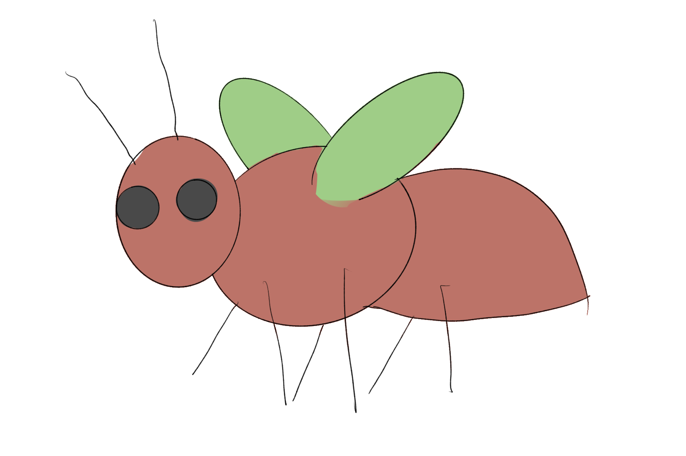

Termine
The Termites have a limited set of words in their language, and no way to create an infinite number of utterances. They lack the ability to mention combinations of more than two things, and lack recursion completely. They are called Termites because they look like termites, and their possibilities will eventually terminate.
